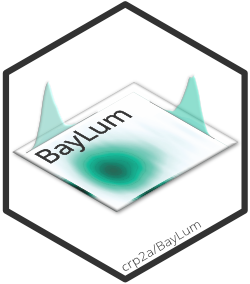

Chronological Bayesian Models Integrating Optically Stimulated Luminescence and C-14 Dating

Source: R/BayLum-package.R
BayLum-package.RdA collection of various R functions for Bayesian analysis of luminescence data and C-14 age estimates. This includes, amongst others, data import, export, application of age and palaeodose models.
Details
This package is based on the functions: Generate_DataFile and Generate_DataFile_MG to import luminescence data. These functions create a list containing all informations to compute age of single-grain OSL measurements for the first function and multi-grain OSL measurements for the second.
The functions: Age_Computation and AgeS_Computation use Bayesian analysis for OSL age estimation for one or various samples according to difference models (e.g. different dose-response curves and different equivalent dose distributions around the palaeodose).
It is possible to consider various BIN/BINX-files per sample, to compute ages of samples in stratigraphic constraints and to integrate systematic errors.
It is possible to calibrate C-14 age with the function AgeC14_Computation. We can also estimate chronology containing 14C age and OSL samples with the function Age_OSLC14.
References
Philippe, A., Guérin, G., Kreutzer, S., 2019. BayLum - An R package for Bayesian analysis of OSL ages: An introduction. Quaternary Geochronology 49, 16–24. doi:10.1016/j.quageo.2018.05.009